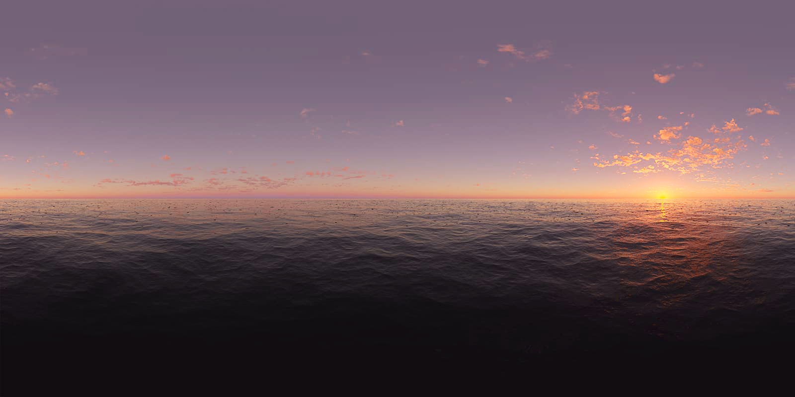

About
GR
·
EN
·
RU
✕
Η ανάμνηση φορτώνεται…
memory is loading…
tap cassette to start

🔊
x:0 y:0 z:0
memories
0 / 0
Βρες όλες τις αναμνήσεις του δρόμου
find all
memories hidden on this street
the radar shows where to look
Η ανάμνηση αποθηκεύτηκε